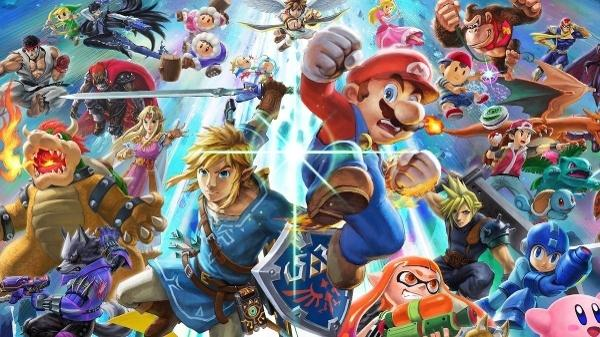

A história dos jogos online remonta aos primeiros dias da rede de computadores baseada em pacotes na década de 1970.[3] Um dos primeiros exemplos de jogos online são os MUDs,[4] incluindo o primeiro, MUD1, que foi criado em 1978 e originalmente confinado a uma rede interna antes de se tornar conectado à ARPANet em 1980.[5] Jogos comerciais seguiram na década seguinte, com Islands of Kesmai, o primeiro RPG online comercial,[6] estreando em 1984,[5] bem como jogos mais gráficos, como os jogos de ação MSX LINKS em 1986,[7] o simulador de voo Air Warrior em 1987 e o jogo Go online do Famicom Modem em 1987.[8] Em 1991, foi criado o primeiro jogo on-line comercial: uma versão do jogo de xadrez da Apple para o computador Apple I que acompanhava a ferramenta Java Connect.[9] Era jogado via ligação direta (local ou internacional) usando a linha telefônica convencional de um jogador à casa do "adversário" via modem do computador, tendo a desvantagem de ser jogado somente entre duas pessoas, recomendava-se este estar em uma região próxima devido o valor exorbitante da conta telefônica
